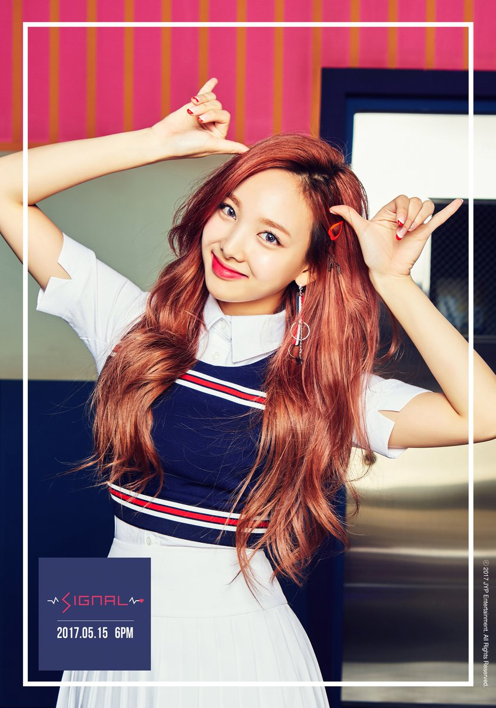

N A Y E O N

Stage Name: Nayeon
Birth Name: Im Na Yeon (임나연)
Nationality: Korean
Position: Lead Vocalist, Face of the Group
Birthday: September 22, 1995
Zodiac Sign: Virgo
Official height: 163 cm (5’4″) / Approx. Real Height: 163 cm (5’4″) / *
Weight: 47 kg (104 lbs)
Blood Type: A
Nayeon facts:
Nayeon has a younger sister named Im Seo-Yeon.
When she was a kid, Nayeon entered a child model contest and got cast by JYP.
At the time, her mom refused, but 10 years later, in 2010, she secretly entered a JYP open audition and passed.
Nayeon was chosen for JYP’s girl group 6mix but they disbanded and never debuted.
She is a big fangirl of F(x) and Krystal and SNSD’s Taeyeon.
Nayeon is also a huge fan of Oh My Girl.
She was the first Sixteen member to be announced and also the first member to be confirmed in Twice.
Nayeon likes badminton.
She likes grapefruitade (beverage).
Nayeon cannot eat sushi that isn’t salmon sushi and also cannot eat chicken feet.
She likes jellies. She likes sweet foods.Nayeon’s 3 favorite colors are beige, sky blue and khaki.
When she’s happy, she raises one arm.
Nayeon’s left leg is weak due to her being in a car accident when she was still in her childhood days.
She was surprised that light brown hair doesn’t fit her. After 3 days, she dyed it to all black.
Nayeon and Sana shares a room. Jungyeon said that these two members are the messiest in their dorm.
Nayeon, BLACKPINK’s Jisoo and Jennie are very close friends.
She starred in San E’s “Please Don’t Go” MV, GOT7’s “Girls Girls Girls”, Jun.K’s “No Love” (Japanese) MV,
miss A’s “Only You” MV and Jun.K “Your Wedding” MV.
Nayeon is scared of the sea.
Nayeon got scolded by Jungyeon before, for touching her Legos while Jungyeon was doing something else.
Nayeon is most confident in her lips.
Nayeon doesn’t think that light brown hair fits her.
She likes spicy foods.
Nayeon likes marinated soy sauce crabs.
She likes salmon sushi.
She cannot eat chicken feet.
She has the habit of frowning when she’s focused on something.
Nayeon’s ideal type: “I don’t have a particular ideal type, but… Someone trustworthy and dependable;
Someone who can take care of me well; Someone who can handle technology well”
Learn More